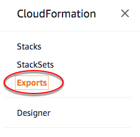

Listar pilhas que importam um valor de saída exportado
Quando você exporta um valor de saída, as pilhas que estão na mesma conta e região da AWS podem importar esse valor. Para ver quais pilhas estão importando um valor de saída específico, use a lista de ação de importação.
Para excluir ou modificar valores de saída exportados, use a ação ListImports para rastrear quais pilhas os estão importando e, em seguida, modifique essas pilhas para remover as funções Fn::ImportValue que fazem referência a valores de saída. Você deve remover todas as importações que fazem referência a valores de saída exportados para poder excluir ou modificar os valores de saída exportados.
Para obter mais informações sobre a exportação e a importação de valores de saída, consulte Exportar valores de saída da pilha.
Para listar pilhas que importam um valor de saída exportado (console)
-
No console do CloudFormation
, no painel de navegação do CloudFormation escolha Exportações.  -
Para verificar quais pilhas importam um determinado valor de exportação, escolha Export Name (Nome da exportação) para esse valor de exportação. O CloudFormation mostra a página de detalhes da exportação, que lista todas as pilhas que estão importando esse valor.
Para listar pilhas que importam um valor de saída exportado (AWS CLI)
-
Execute o comando
aws cloudformation list-imports, fornecendo o nome do valor de saída exportado.O CloudFormation retorna uma lista de pilhas que estão importando o valor.
Para listar pilhas que importam um valor de saída exportado (API)
-
Execute a API
ListImportsfornecendo o nome do valor de saída exportado.O CloudFormation retorna uma lista de pilhas que estão importando o valor.